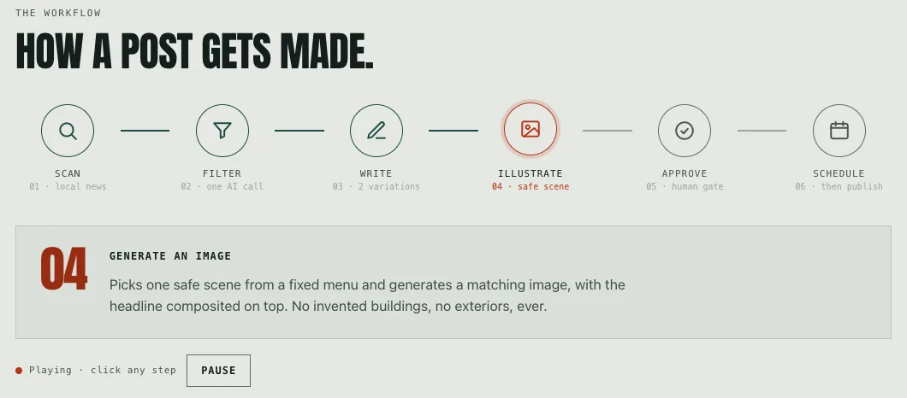

Problem
Listings across California, Florida and Tennessee need fresh posts every week to stay visible on Google. Nobody writes about 150 posts a year per listing by hand, so listings go stale.
How it works
News search queries the city, county, state and national levels together and prefers the most local results. One Claude call filters articles for relevance to the facility, and a second writes two versions from different angles. A cleaner strips the markdown and em dashes that give AI writing away. For the image, the model never writes a prompt: it picks one scene from a fixed menu. A person approves one or both versions, and Zapier schedules them to the listing.
Pipeline stages, in order:
- Scan local news
- Filter
- Write two versions
- Illustrate
- Person approves
- Schedule
What it guards against
An image that misrepresents a facility. The scene menu once included a building exterior, and an AI-generated exterior meant visitors arrived at a different building than the one pictured. Exteriors were removed from the menu. Separately, the news provider failed 3 of 6 identical requests in testing. Each request gets one retry, because a third attempt made searches take over a minute.
How I know it works
72 tests, all offline with every provider mocked. Across 1,708 saved news variations there is not one em dash, and none goes over Google's 1,500-character limit.

Result
854 news posts and 988 topic posts generated, 2,621 variations scheduled. The first post was scheduled nine days after the first commit.
Stack
Python, Streamlit, SQLAlchemy, Claude, Gemini image models, SerpAPI, DataForSEO, Cloudinary, Zapier.